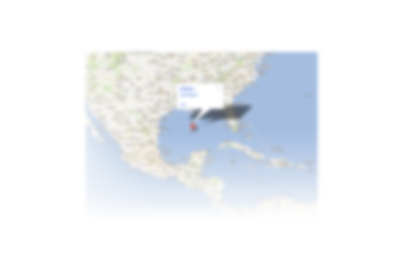
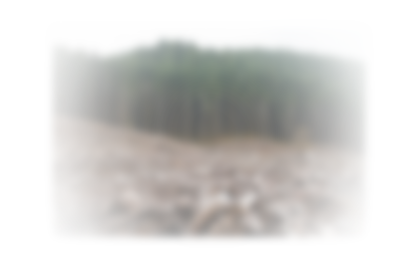

The Limits of Growth
Exploring the relationship between economic growth and
environmental sustainability

Naomi Klein (No Logo, The Shock Doctrine) presented this TED Talk, "Addicted to Risk" in December 2010 in Washington, DC.

